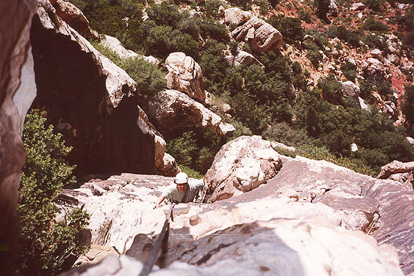
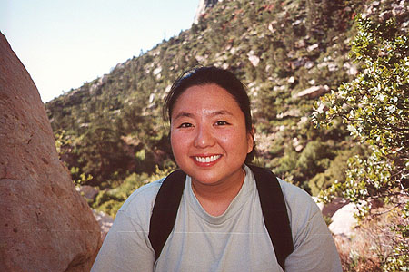
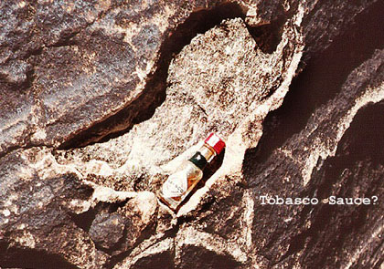
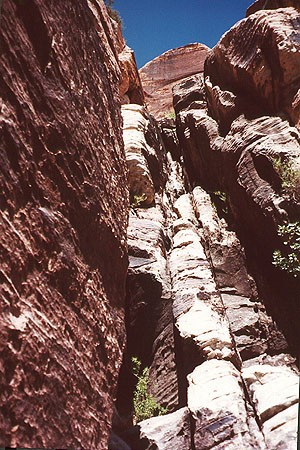

Red Rocks, Nevada
- April 29 - May 1, 2000
Kris and I made a short trip to Las Vegas for two reasons. One, to visit her parents and grandparents vacationing there, and two, to do some climbing! Friday night, we packed, although Kris never actually got to bed, doing all kinds of last minute things.
Right after the airport, we hoped to get out to the rocks and do a short climb. I had picked out a 5.3 climb with a 15 minute approach that looked like great fun. We got into the blazing sun, and boy was it hot! We tromped down the trail, and took a wrong turn at a hidden walkway. I had accidentally flipped to the next page in the book, and started reading the wrong approach! We scrambled up as the walkway turned into a chimney with some nice 4th class climbing in the middle. Kris was a little uncomfortable on the terrain, and we were both confused as to how this would get us closer to our climb, almost on the other side of the wall (the book mentioned a long ledge, and from below, it appeared we could walk this ledge at a higher level. Needless to say, the ledge didn’t exist!). So we climbed down, and Kris found a way around the steep part.

Back to square one! The book mentioned 30 feet of “scrambling” up a wall on the back side of the walkway. I started up at a suitable point, then painfully climbed down to change into rock shoes. This was definitely 5th class terrain, and we still couldn’t see how we’d get to the climb. Kris had a great eye for judging the rock, and I started up again where she recommended. It was easier. I went up a ways, then wandered on low angle slabs to the right, finally deciding that the climb was around the corner from that point. I had the rope, so I hauled up our pack, put Kris on belay and she came up. Remember, we’re still on the “15 minute approach!”
I got some gear into cracks, then led out along the slabby ramp, running out of rope pretty quickly. I put in some more gear, then asked Kris to simul-climb this whole 3rd class section. We did this, and I made it around the corner to the base of the climb. I couldn’t find any sort of anchor though. I was bringing Kris in when she stopped. There was a period of loose boulders resting on the angled slabs just before, and although I had stepped over and among them, Kris wasn’t going for this! Also, there was very little runout, with a big drop-off to the right. Realizing that I couldn’t do anything to protect her on this, the decision to turn around was made instantly. I lowered Kris to the ground from the belay point, then I down-climbed the 5th class wall. Needless to say, I was pretty pissed-off about the book’s extremely casual description of this approach. What “should” have taken 15 minutes, took us over 2 hours. Had I known the level of unprotected, serious scrambling, I wouldn’t have brought Kris there!

Anyway, Kris was a great sport, and willing to try anything, up to a point. She made a good decision to turn around. I was just continuing more out of brute stubbornness, knocking down each obstacle even when it became unwise to continue doing so. Force of habit can get you onto some evil terrain!
I still can’t believe that approach description…
So later, we had a great Italian food dinner with Jim, our excellent host for that first night. We didn’t feel so bad about the first climb because we planned to climb the Solar Slab Gully early in the morning. This has four or five pitches of easy fifth class climbing, something that really appealed to us. Then we’d rappel the route. Sounds like fun!
Kris was bleary-eyed, but overall excited and ready to go. We left Jim’s as the sun was peeking over the city. At the trail-head, we started out with our rope, gear, and plenty of water. The hike to the deep canyon was nice, and soon we were pawing through the book and looking for the best approach among a maze of boot paths. I led Kris up one steep pitch after another, each time promising that the base of the climb must be around the next corner. We could see the climbing route pretty clearly on the wall above. It ascends a deep, steep gorge in the slab, populated with a few trees and shrubs at level points. But getting there went on and on! Finally, we crossed a gully, scrambled up a rock and down the other side, meeting a host of footprints near the base. We climbed to a tree below a long deep crack in the rock, happy for some shade!
Leading on the first pitch shattered some illusions I had about this climb. Steve and I had discussed simul-climbing it in the dark one day for an attempt at Solar Slab, the long route that continues above the Gully. But actually climbing it made me feel it warranted a little more caution! I passed a ledge with a rappel station, and continued to another rappel point that served as a belay station. The view from here was great, and Kris came up quite easily. We were both smiling, happy to finally be climbing, instead of grubbing in the dirt, looking for it!

A level walk back into the gully brought me to an “interesting” boulder problem I’d probably describe as 5.7, especially if you’re short. I was surprised at this, because this pitch was supposed to be only 4th class. I continued up, veering left, and up again on easy ground to a belay tree. Kris found this problem nearly insurmountable, but with a tight belay, she made it up. We rested for a few minutes, then moved the belay behind a tree in a level spot. This pitch looked pretty fun, and it was. I enjoyed some wild stemming moves in a deep chimney, passed a boulder with slings on it, then emerged from the deep gorge into sunlight. I came to a ledge where I should have stopped, but didn’t. I continued to a hanging belay station 20 feet above, then wanted to belay at a shady tree 15 feet back in. But I was out of rope, so I belayed at the hanging station from two bolts. This was a wildly exposed location, with a lot of air under my feet. I also had a view of the final pitch, which looked great.

But hanging on my harness got pretty uncomfortable, and my right leg was falling asleep. I gave Kris a tight belay, but this was difficult to do, as the rope from below pulled on me, and my anchor above pulled on me. She arrived at the crux section, and needed a lot of help from the rope. But I was like a bead on a wire, pulled taut between the bolts and the rope below! Kris was hanging on the rope, attempting to work out the puzzle, and I was suspended in space, pulled off the vertical by tension above and below.
This was getting really uncomfortable, in fact, starting to hurt quite a bit. When Kris asked for more tension, I finally said “I’m going to lower you!” I did this, and the painful pressure on my leg abated somewhat. But I wasn’t done. She had to untie from the rope so I could pull it up and execute two rappels in order to get down to her. While I worked on this process, I would do a pull-up every now and then to get blood back into my leg and foot. Eventually, I was ready to rappel, and did so, pretty sad and upset that we had come so far to get thwarted in this way. I wished I could go down to the ledge I should have belayed on, set up a belay, and bring Kris up from there. I could give her a lot more help with the rope then. But since I had the rope, there was no way I could get it to her easily. I’d pretty much have to start the pitch over again after two rappels. We needed to meet and visit with Kris’s family, and we would already be late for that. Grr! Also, I had been short with Kris, who had no idea of my situation above her.
Finally, I reached her at the shady level area, and we told each other our stories. The crux chimney just didn’t work for her at all, it was very much a function of height. At 5’2”, Kris is 9 inches shorter than me, and this can make a huge difference sometimes. In the rock gym, Kris is climbing 5.8 routes, but every now and then, there is an “easier” climb that requires a long reach to even start. This pitch was in that category. I could explain why I got so terse and militant in my shouted comments from above! We hugged and licked our wounds, happy to be together and ready to go home.
Oh yeah, that pitch was supposed to be 5.2…
One rappel, two rappels, three rappels. Kris was definitely getting some good practice! At the base, Kris confidently down-climbed the short 4th class step that hits the approach path. But we were both tired, and looking forward to finishing the descent and getting back. On the wall, Kris had scouted a different, more direct way down, and we found there was a path there. We started down the steep, dirty sloping terrain, eventually running into trouble at a red band of rock. It looked crumbly and evil, so we stayed right, but couldn’t avoid it entirely. It was very hot, and Kris was suddenly exhausted. I felt like such an idiot for a while, having forgotten about the severe ruggedness of the terrain around here. Really, Kris had nothing to compare it to, although I’d been tromping on these kinds of “trails” for a few years now. After some more slow, painful descent, I was able to help by standing in front of Kris and acting as a kind of “walking hand-balance”. It made me feel immensely better to help, and pleased us both that we were moving much faster. The problem was that I might walk down a tilting slab covered in tiny ball-bearings pretty quickly, but Kris would need to go around, sit down or face in to make it past. Even then, it was hard. But if I went a few feet ahead, braced my feet on good holds, she could stride confidently down with my support, even better if I could walk with her, moving from one secure position to the next. This technique really saved us a lot of physical and mental strain.
we still had more to do, however, following the rocky, scrambly stream bed to where it joins the main trail. This went quite pleasantly, and we breathed a BIG sigh of relief once back on the trail. A mile or so of walking, and we reached the car, never so happy for air conditioning!
And with that, the climbing portion of our Red Rocks trip ended. It wasn’t a disaster, but it wasn’t exactly smashingly fun, either. It was too hot, the climbs weren’t well researched, we got sandbagged (the very definition of the term is given by the “15 minutes” incident above), at least one mistake was made, and the grueling, relentless nature of the approach trails wore down the fun pretty efficiently.
I feel like I’m just starting to climb with Kris, and am impressed with her equanimity in the face of all kinds of uncertainties. Sometimes I get it right, and we have a great, relaxing day at Vantage, and sometimes I get it wrong, completely imposing my own abilities/desires onto her. The special thing is that she’s always willing to give me another chance to show her a good time on the cliffs, and I look forward to many wonderful years doing just that.
Her family was shocked when we arrived at the gambling hall fresh from the climb, dirty and carrying big packs. A telling statistic is that I was so tired I could barely move, and had to be let into the hotel room to sleep like the dead. But Kris stayed out, fighting off rolls of quarters her grandma kept pressing into her hand! Kris was severely dehydrated though, and it took over a week to hydrate again. Don’t underestimate the heat!
Despite everything the Red Rocks threw at us this time, we did have smiles on our faces at the car. Does it matter if the smile is more for the A.C. and a Coke? Nope!